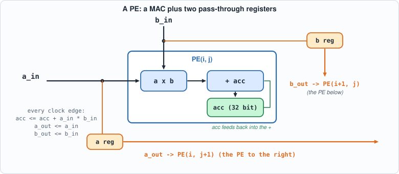
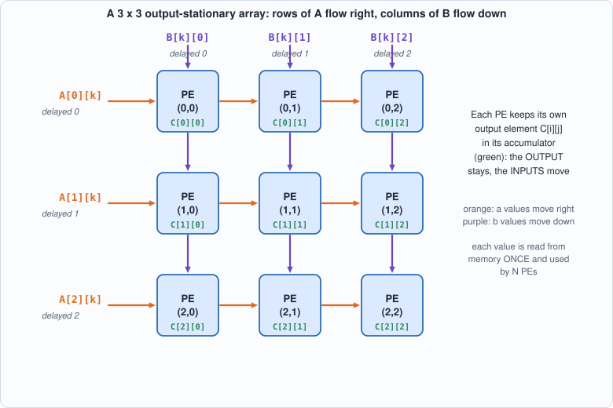
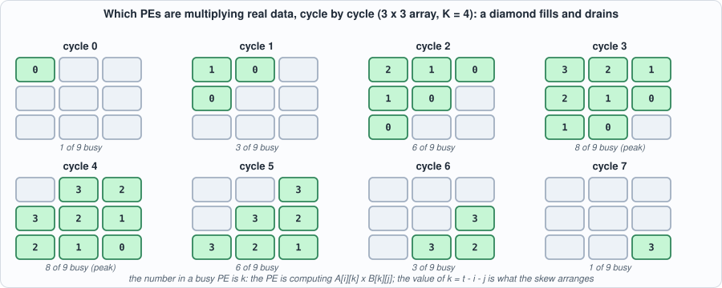
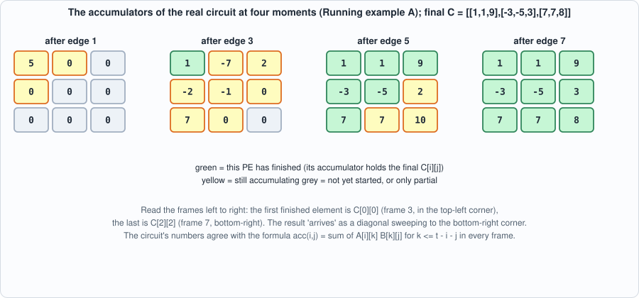
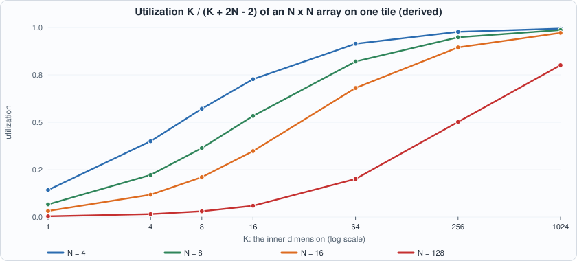
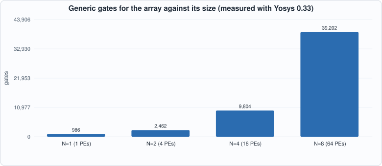
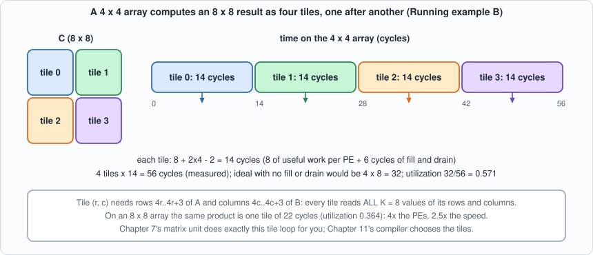

4. The Systolic Array: N x N Multiplies Per Cycle, and the Schedule That Makes It Work¶
About the animals in this picture and where they are standing
- Markhor (Capra falconeri) lives in the mountains of Pakistan, Afghanistan and neighbouring regions. The males' horns twist in a corkscrew; the name is often explained as Persian for 'snake-eater'. It is Pakistan's national animal, and community-based conservation has helped some populations recover.
- Siberian ibex (Capra sibirica) lives in the high mountains of Central Asia, from the Altai and Tian Shan to the Himalaya. It is one of the largest ibexes, and the males' ridged horns can exceed a metre in length.
- Alpine ibex (Capra ibex) lives in the European Alps, usually above the tree line on steep rock, and is a famously sure-footed climber. Males carry horns that can reach about a metre. Hunting left only a small remnant, around the Gran Paradiso in Italy, by the early 1800s; reintroductions have since restored it across the Alps.
- Nubian ibex (Capra nubiana) lives in the rocky, arid hills of north-east Africa and the Arabian Peninsula, from the Sinai and Egypt south to Sudan and Ethiopia. Its coat matches the desert rock, and the males' ridged horns sweep back like a sickle.
The scene is imaginary: it is set on Titan, Saturn's largest moon: a thick orange haze, and lakes of liquid methane and ethane on its surface. The animals are stylised drawings, shown where they could not live, for effect.
What you will understand: how a grid of multiply-accumulate units computes a whole matrix product without anyone ever fetching a value twice. You will build an output-stationary systolic array in Verilog (any size N), see the exact cycle on which each product happens, derive its utilization from the schedule, check the circuit against ordinary matrix multiplication for six array shapes in two simulators, and break it sixteen ways to see whether the tests notice.
What you need to know first: Chapter 2 (the MAC) and Chapter 3 (int8 and the int32 accumulator).
What this chapter builds: rtl/systolic.v (the PE and the N x N array), model/systolic_model.py (the answer key and the wavefront printer), tb/systolic_tb.v (the self-checking testbench), tools/mut_ch04.py (mutation), and for the running examples tb/systolic_trace_tb.v, tb/systolic_tiles_tb.v, tools/ch04_example_a.py, tools/ch04_example_b.py.
The bottleneck a systolic array removes¶
One output element of a matrix product is a dot product of K pairs. With the Chapter 2 MAC we could compute one pair per clock cycle, and an N x N result of inner length K would take N x N x K cycles. We can do better by using many MACs at once; the question is how to feed them.
Here is the trap. If every MAC is wired to a memory that supplies its two operands every cycle, then N x N MACs need 2 x N x N operand reads per cycle. Memories cannot do that: a typical on-chip memory delivers one or two words per port per cycle. The arithmetic is cheap and the data movement is the cost. That is true on every modern chip, and it is why a matrix unit is organized the way this chapter shows.
The key observation is that the same number is used many times. In C = A x B, the value A[i][k] is needed by every column j of C (N different outputs), and B[k][j] by every row i. If a value is read from memory once and then passed from PE to PE, each memory read can feed N multiplications instead of one. A systolic array is the layout that makes that passing automatic.
The idea¶
A matrix product C = A x B with A of size N x K and B of size K x N needs N * N * K multiply-accumulates. A naive processor fetches an A value and a B value from memory for every one of them. A systolic array (the name is from the heart: data pulses through rhythmically) avoids that:
- There is one processing element (PE) per output element: PE(i,j) owns
C[i][j]and keeps its partial sum in its own accumulator. That is why this layout is called output-stationary: the outputs stay still, the inputs move. - Row
iofAenters PE(i,0) from the left, and every PE hands theavalue it just used to its right neighbour (through a register). ColumnjofBenters PE(0,j) from the top and moves down the same way. - Each value is read from memory once at the edge and then used N times by N different PEs, each one on a different output element.

Figure 4.1: one PE. The MAC from Chapter 2 plus a register fora (to the right) and one for b (downwards).

Figure 4.2: the 3 x 3 array. Orange arrows carry values of A to the right, purple arrows carry values of B downwards; each green label is the output element that PE owns.For PE(i,j) to multiply the right pair, A[i][k] and B[k][j] must arrive on the same cycle. The trick is to skew the inputs: delay row i of A by i cycles and column j of B by j cycles. Then A[i][k] reaches PE(i,j) at cycle k + i + j, and so does B[k][j]. In the circuit below that is nothing but registers; the skew is applied by whoever feeds the edges (in this chapter the testbench, in Chapter 7 the sequencer).
Check it by hand. A[i][k] enters at the left edge of row i at cycle k + i (the row delay i). It then moves one PE to the right per clock, so it reaches column j after j more cycles: cycle k + i + j. B[k][j] enters the top of column j at cycle k + j, moves down one PE per cycle, and reaches row i at cycle k + j + i. Both arrive at the same time, in every PE, for every k. Skewing is what makes the two streams meet.

Figure 4.3: the wavefront for a 3 x 3 array and K = 4. The number in a busy PE is k, the index of the product it is computing. The busy region is a diamond: one PE at the start, eight of nine at the peak, one at the end.The circuit: rtl/systolic.v¶
// Chapter 4: an output-stationary systolic array. N x N processing elements (PEs), each holding one element of the result C = A x B.
// Row i of A enters from the left edge, column j of B enters from the top edge. Every PE multiplies the pair of values passing through it, adds the product to its own accumulator, and hands both values on (a to the right, b downwards) through a register.
// The rows and columns are fed SKEWED: row i of A is delayed by i cycles and column j of B by j cycles, so that A[i][k] and B[k][j] reach PE(i,j) in the same cycle (cycle k+i+j).
// clr = 1 for one cycle clears the accumulators AND the pass-through registers; zeros fed outside the matrix contribute nothing, so no enable is needed.
module pe (input clk, input clr, input signed [7:0] a_in, input signed [7:0] b_in, output reg signed [7:0] a_out, output reg signed [7:0] b_out, output reg signed [31:0] acc);
always @(posedge clk) begin
if (clr) begin a_out <= 8'sd0; b_out <= 8'sd0; acc <= 32'sd0; end
else begin a_out <= a_in; b_out <= b_in; acc <= acc + a_in * b_in; end
end
endmodule
module systolic #(parameter N = 4) (input clk, input clr, input [8*N-1:0] a_edge, input [8*N-1:0] b_edge, output [32*N*N-1:0] c);
wire signed [7:0] aw [0:N-1][0:N]; // aw[i][j]: the a value entering PE(i,j) from the left
wire signed [7:0] bw [0:N][0:N-1]; // bw[i][j]: the b value entering PE(i,j) from above
genvar i, j;
generate
for (i = 0; i < N; i = i + 1) begin : row
assign aw[i][0] = a_edge[8*i +: 8];
assign bw[0][i] = b_edge[8*i +: 8];
for (j = 0; j < N; j = j + 1) begin : col
wire signed [31:0] acc;
pe u (.clk(clk), .clr(clr), .a_in(aw[i][j]), .b_in(bw[i][j]), .a_out(aw[i][j+1]), .b_out(bw[i+1][j]), .acc(acc));
assign c[32*(i*N + j) +: 32] = acc;
end
end
endgenerate
endmodule
Commentary. pe is a MAC with two pass-through registers: on every clock edge it adds a_in * b_in to acc and copies a_in to a_out and b_in to b_out, so each neighbour sees the value one cycle later. That one-cycle delay per hop is exactly the skew arithmetic above. systolic systolic is two nested generate loops that wire PEs into a grid: aw[i][j] is the a value entering PE(i,j) from the left (and leaving PE(i,j-1)), bw[i][j] the b value entering from above. clr clears the accumulators and the pass-through registers, because values left in the pipeline from the previous product would otherwise be multiplied into the next one. There is no enable: a zero fed to a PE adds zero.
The answer key and the wavefront: model/systolic_model.py¶
#!/usr/bin/env python3
"""Chapter 4: the answer key for the systolic array, plus a cycle-by-cycle picture of the wavefront.
The answer is ordinary matrix multiplication, C[i][j] = sum_k A[i][k] * B[k][j] in exact integers (the accumulators wrap at 32 bits, which these sizes never reach, and the model checks that).
The vector file is a stream of 32-bit hex words: [ncases, N, K] then, per case, A (N x K, row-major), B (K x N, row-major) and C (N x N). int8 values are sign-extended to 32 bits.
Usage: systolic_model.py OUTFILE N K [NRANDOM] or systolic_model.py --wave N K (prints which A[i][k] * B[k][j] each PE performs in each cycle)"""
import random, sys
def matmul(A, B): return [[sum(A[i][k] * B[k][j] for k in range(len(B))) for j in range(len(B[0]))] for i in range(len(A))]
def cases(N, K, nrandom, seed):
R = random.Random(seed); out = []
rnd = lambda: [[R.randrange(-128, 128) for _ in range(K)] for _ in range(N)]
rndb = lambda: [[R.randrange(-128, 128) for _ in range(N)] for _ in range(K)]
out.append(([[0] * K for _ in range(N)], rndb())) # A = 0
out.append(([[-128] * K for _ in range(N)], [[-128] * N for _ in range(K)])) # the largest possible sums
out.append(([[-128] * K for _ in range(N)], [[127] * N for _ in range(K)])) # the most negative
out.append(([[1 if i == k else 0 for k in range(K)] for i in range(N)], [[R.randrange(-128, 128) for _ in range(N)] for _ in range(K)])) # selects rows of B
out.append(([[(i * K + k) % 7 - 3 for k in range(K)] for i in range(N)], [[(k * N + j) % 5 - 2 for j in range(N)] for k in range(K)])) # small patterned values: transposition shows
for _ in range(nrandom): out.append((rnd(), rndb()))
return out
def wave(N, K):
cycles = K + 2 * N - 2; macs = 0
for t in range(cycles):
busy = [(i, j, t - i - j) for i in range(N) for j in range(N) if 0 <= t - i - j < K]; macs += len(busy)
print(f"cycle {t:2d}: " + (" ".join(f"PE({i},{j})<-A[{i}][{k}]*B[{k}][{j}]" for i, j, k in busy) if len(busy) <= 4 else f"{len(busy)} of {N*N} PEs busy"))
print(f"{macs} multiply-accumulates in {cycles} cycles on {N*N} PEs: utilization {macs / (cycles * N * N):.3f} = K/(K+2N-2) = {K / cycles:.3f}")
if __name__ == "__main__":
if sys.argv[1] == "--wave": wave(int(sys.argv[2]), int(sys.argv[3])); sys.exit()
out, N, K = sys.argv[1], int(sys.argv[2]), int(sys.argv[3]); nr = int(sys.argv[4]) if len(sys.argv) > 4 else 200
cs = cases(N, K, nr, 1000 * N + K); w = lambda v: "%08x" % (v & 0xFFFFFFFF); words = [len(cs), N, K]
for A, B in cs:
C = matmul(A, B); assert all(-2**31 <= v < 2**31 for r in C for v in r)
words += [w(v) if isinstance(v, int) else v for v in [x for r in A for x in r] + [x for r in B for x in r] + [x for r in C for x in r]]
open(out, "w").write("\n".join(w(x) if isinstance(x, int) else x for x in words) + "\n"); print(f"{len(cs)} matrix products (N={N}, K={K}) written to {out}")
The key is plain matrix multiplication in exact integers; it shares no code and no structure with the circuit. The file also prints the wavefront: which PEs are working in each cycle and on which A[i][k] * B[k][j].

Figure 4.4: the accumulators of the real circuit (Running example A) at four moments. The results finish diagonally, from the top-left PE to the bottom-right.The testbench: tb/systolic_tb.v¶
// Chapter 4: feed the array skewed matrices, wait exactly K+2N-2 cycles, and compare all N*N accumulators with the golden C. Size comes from -DNN= and -DKK= (default 4 and 7); vectors from out/systolic_vectors.hex.
`timescale 1ns/1ps
`ifndef NN
`define NN 4
`endif
`ifndef KK
`define KK 7
`endif
module systolic_tb;
localparam N = `NN, K = `KK;
reg clk = 0, clr = 0; reg [8*N-1:0] a_edge = 0, b_edge = 0; wire [32*N*N-1:0] c;
systolic #(.N(N)) dut (.clk(clk), .clr(clr), .a_edge(a_edge), .b_edge(b_edge), .c(c));
always #5 clk = ~clk;
reg [31:0] mem [0:1048575]; integer ncases, cs, base, t, i, j, bad, hdrN, hdrK;
reg signed [31:0] av, bv, got, want;
initial begin
$readmemh("out/systolic_vectors.hex", mem); ncases = mem[0]; hdrN = mem[1]; hdrK = mem[2]; bad = 0;
if (hdrN != N || hdrK != K) begin $display("FAIL: vector file is for N=%0d K=%0d but the testbench is N=%0d K=%0d", hdrN, hdrK, N, K); $fatal(1, "size mismatch"); end
for (cs = 0; cs < ncases; cs = cs + 1) begin
base = 3 + cs * (N*K + K*N + N*N);
@(negedge clk); clr = 1; a_edge = 0; b_edge = 0; @(negedge clk); clr = 0;
for (t = 0; t < K + 2*N - 2; t = t + 1) begin
for (i = 0; i < N; i = i + 1) begin
if (t - i >= 0 && t - i < K) av = mem[base + i*K + (t - i)]; else av = 0;
a_edge[8*i +: 8] = av[7:0];
if (t - i >= 0 && t - i < K) bv = mem[base + N*K + (t - i)*N + i]; else bv = 0;
b_edge[8*i +: 8] = bv[7:0];
end
@(negedge clk);
end
for (i = 0; i < N; i = i + 1) for (j = 0; j < N; j = j + 1) begin
got = c[32*(i*N + j) +: 32]; want = mem[base + 2*N*K + i*N + j];
if (got !== want) begin bad = bad + 1; if (bad <= 5) $display("MISMATCH case %0d C[%0d][%0d]: got %0d want %0d", cs, i, j, got, want); end
end
end
if (bad == 0) $display("PASS: N=%0d K=%0d, %0d matrix products match the golden model, each read after exactly %0d cycles (exit status 0)", N, K, ncases, K + 2*N - 2);
else begin $display("FAIL: %0d wrong results", bad); $fatal(1, "systolic failed"); end
$finish;
end
endmodule
The testbench applies the skew itself, runs exactly K + 2N - 2 cycles and then compares all N * N accumulators. Reading at exactly that cycle is part of the test: a version of the circuit with an extra pipeline register would have unfinished sums at that point, and a version that finished earlier would be producing wrong sums.
Running it¶
#!/usr/bin/env python3
"""Chapter 4: the systolic array through the flow: a printed wavefront, golden vectors for several array sizes, both simulators, and Yosys cost against N. Usage: ch04_run.py"""
import os, subprocess, sys
sys.path.insert(0, os.path.dirname(os.path.abspath(__file__))); import hw
def run(*a): return subprocess.run([sys.executable] + list(a), cwd=hw.ROOT, capture_output=True, text=True).stdout.strip()
print("== 1. the wavefront for a 3 x 3 array multiplying (3 x 4) by (4 x 3)"); print(run("model/systolic_model.py", "--wave", "3", "4"))
CONFIGS = [(2, 2), (3, 5), (4, 7), (4, 1), (8, 8), (8, 33)]
F = ["rtl/systolic.v", "tb/systolic_tb.v"]
print("\n== 2. golden vectors and both simulators, for several sizes (N = array side, K = inner dimension)")
for N, K in CONFIGS:
print(run("model/systolic_model.py", "out/systolic_vectors.hex", str(N), str(K), "100"))
for name, fn in (("Icarus", hw.sim_icarus), ("Verilator", hw.sim_verilator)):
rc, out = fn(F, "systolic_tb", defines=(f"NN={N}", f"KK={K}"))
print(f" {name:10s}", ([l for l in out.splitlines() if l.startswith(("PASS", "FAIL", "MISMATCH"))] or out.strip().splitlines()[-2:])[0], f"(exit {rc})")
print("\n== 3. Yosys: cost against array size")
GATES = "abc -g AND,NAND,OR,NOR,XOR,XNOR,ANDNOT,ORNOT,MUX; opt_clean; stat"
print(f"{'N':>3s} {'PEs':>4s} {'generic gates':>14s} {'gates/PE':>9s} {'iCE40 cells':>12s} {'flip-flops':>11s}")
for N in (1, 2, 4, 8):
top = f"systolic_n{N}"; wrap = f"module {top}(input clk, input clr, input [{8*N-1}:0] a_edge, input [{8*N-1}:0] b_edge, output [{32*N*N-1}:0] c); systolic #(.N({N})) u(.*); endmodule\n"
open(os.path.join(hw.ROOT, "out", top + ".v"), "w").write(wrap)
fs = ["rtl/systolic.v", f"out/{top}.v"]
g = hw.synth_stats(fs, top, f"synth -flatten -top {top}; {GATES}"); l = hw.synth_stats(fs, top, f"synth_ice40 -flatten -top {top}; stat")
ff = sum(v for k, v in l["cells"].items() if k.startswith("SB_DFF"))
print(f"{N:3d} {N*N:4d} {g['total']:14d} {g['total']/(N*N):9.1f} {l['total']:12d} {ff:11d}")
Output (cloud sandbox -- live-executed; Icarus Verilog 12.0, Verilator 5.020, Yosys 0.33)
== 1. the wavefront for a 3 x 3 array multiplying (3 x 4) by (4 x 3)
cycle 0: PE(0,0)<-A[0][0]*B[0][0]
cycle 1: PE(0,0)<-A[0][1]*B[1][0] PE(0,1)<-A[0][0]*B[0][1] PE(1,0)<-A[1][0]*B[0][0]
cycle 2: 6 of 9 PEs busy
cycle 3: 8 of 9 PEs busy
cycle 4: 8 of 9 PEs busy
cycle 5: 6 of 9 PEs busy
cycle 6: PE(1,2)<-A[1][3]*B[3][2] PE(2,1)<-A[2][3]*B[3][1] PE(2,2)<-A[2][2]*B[2][2]
cycle 7: PE(2,2)<-A[2][3]*B[3][2]
36 multiply-accumulates in 8 cycles on 9 PEs: utilization 0.500 = K/(K+2N-2) = 0.500
== 2. golden vectors and both simulators, for several sizes (N = array side, K = inner dimension)
105 matrix products (N=2, K=2) written to out/systolic_vectors.hex
Icarus PASS: N=2 K=2, 105 matrix products match the golden model, each read after exactly 4 cycles (exit status 0) (exit 0)
Verilator PASS: N=2 K=2, 105 matrix products match the golden model, each read after exactly 4 cycles (exit status 0) (exit 0)
105 matrix products (N=3, K=5) written to out/systolic_vectors.hex
Icarus PASS: N=3 K=5, 105 matrix products match the golden model, each read after exactly 9 cycles (exit status 0) (exit 0)
Verilator PASS: N=3 K=5, 105 matrix products match the golden model, each read after exactly 9 cycles (exit status 0) (exit 0)
105 matrix products (N=4, K=7) written to out/systolic_vectors.hex
Icarus PASS: N=4 K=7, 105 matrix products match the golden model, each read after exactly 13 cycles (exit status 0) (exit 0)
Verilator PASS: N=4 K=7, 105 matrix products match the golden model, each read after exactly 13 cycles (exit status 0) (exit 0)
105 matrix products (N=4, K=1) written to out/systolic_vectors.hex
Icarus PASS: N=4 K=1, 105 matrix products match the golden model, each read after exactly 7 cycles (exit status 0) (exit 0)
Verilator PASS: N=4 K=1, 105 matrix products match the golden model, each read after exactly 7 cycles (exit status 0) (exit 0)
105 matrix products (N=8, K=8) written to out/systolic_vectors.hex
Icarus PASS: N=8 K=8, 105 matrix products match the golden model, each read after exactly 22 cycles (exit status 0) (exit 0)
Verilator PASS: N=8 K=8, 105 matrix products match the golden model, each read after exactly 22 cycles (exit status 0) (exit 0)
105 matrix products (N=8, K=33) written to out/systolic_vectors.hex
Icarus PASS: N=8 K=33, 105 matrix products match the golden model, each read after exactly 47 cycles (exit status 0) (exit 0)
Verilator PASS: N=8 K=33, 105 matrix products match the golden model, each read after exactly 47 cycles (exit status 0) (exit 0)
== 3. Yosys: cost against array size
N PEs generic gates gates/PE iCE40 cells flip-flops
1 1 986 986.0 286 32
2 4 2462 615.5 1187 160
4 16 9804 612.8 4774 704
8 64 39202 612.5 19227 2944
Reading it¶
- The wavefront is a diamond. The array fills diagonally (one PE busy in cycle 0, 8 of 9 in cycles 3-4) and drains the same way. For 3 x 3 PEs and K = 4 that is 36 multiply-accumulates in 8 cycles, utilization 0.5.
- Utilization = K / (K + 2N - 2). This is derived from the schedule: each PE does exactly K useful MACs, and the product takes
K + 2N - 2cycles because the last PE, PE(N-1,N-1), starts only at cycle2N - 2. The Python model counts the busy PEs cycle by cycle and agrees: 0.400 for N=4, K=4; 0.914 for N=4, K=64; 0.821 for N=8, K=64. Small matrices waste an array, and long inner dimensions amortize the fill and drain. This single formula is why Chapter 9 will batch requests.

Figure 4.5 (derived from the formula): utilization against the inner dimension K. The larger the array, the longer the inner dimension needed to keep it busy: a 128 x 128 array is at 20% for K = 64. - All six array shapes pass in both simulators, including non-square products (K different from N, so a transposed or swapped index shows up), K = 1 (almost all pipeline), and N = 8 with K = 33 (47 cycles). - Cost is linear in the number of PEs. About 612 generic gates per PE (39,202 for N=8), 44 flip-flops per PE on average (the 32-bit accumulator plus the two 8-bit pass-through registers, less the unused ones at the edges). The single-PE case (N=1) came out larger per PE (986 gates); the author did not investigate why, and the figure is reported as measured. (Yosys 0.33 default flow; iCE40 cells are for an FPGA and the figures say nothing about timing or about a real chip's area.)
Figure 4.6 (measured): the gate count grows with the number of PEs, i.e. with N squared.Running example A: watch the diamond on the real circuit¶
The point of this example: Figure 4.3 is a picture of the schedule. This example runs the actual Verilog and shows that the accumulators evolve exactly as that picture says. The testbench tb/systolic_trace_tb.v multiplies a 3x4 matrix A by a 4x3 matrix B (small numbers, so that you can check by hand), applies the skew, and prints all nine accumulators after every clock edge. tools/ch04_example_a.py then compares each frame with a formula derived from the schedule alone: the accumulator of PE(i,j) after edge t holds the sum of A[i][k] * B[k][j] over all k <= t - i - j.
// Chapter 4, running example A: a 3 x 3 array multiplies A (3 x 4) by B (4 x 3). After every clock edge the testbench prints all nine accumulators ("F cycle acc00 acc01 ... acc22"), so the diamond can be watched filling and draining. The skew is applied here, exactly as in systolic_tb.v.
`timescale 1ns/1ps
module systolic_trace_tb;
localparam N = 3, K = 4;
reg clk = 0, clr = 0; reg [8*N-1:0] a_edge = 0, b_edge = 0; wire [32*N*N-1:0] c;
systolic #(.N(N)) dut (.clk(clk), .clr(clr), .a_edge(a_edge), .b_edge(b_edge), .c(c));
always #5 clk = ~clk;
reg signed [7:0] A [0:N-1][0:K-1]; reg signed [7:0] B [0:K-1][0:N-1]; integer t, i, k, j; reg signed [7:0] av, bv;
initial begin
A[0][0]=1; A[0][1]=2; A[0][2]=3; A[0][3]=4; B[0][0]=1; B[0][1]=0; B[0][2]=2;
A[1][0]=0; A[1][1]=-1; A[1][2]=2; A[1][3]=1; B[1][0]=2; B[1][1]=1; B[1][2]=0;
A[2][0]=5; A[2][1]=1; A[2][2]=-2; A[2][3]=0; B[2][0]=0; B[2][1]=-3; B[2][2]=1;
B[3][0]=-1; B[3][1]=2; B[3][2]=1;
@(negedge clk); clr = 1; @(negedge clk); clr = 0;
for (t = 0; t < K + 2*N - 2 + 2; t = t + 1) begin
for (i = 0; i < N; i = i + 1) begin
av = (t - i >= 0 && t - i < K) ? A[i][t - i] : 8'sd0; a_edge[8*i +: 8] = av; // row i of A, delayed by i cycles
bv = (t - i >= 0 && t - i < K) ? B[t - i][i] : 8'sd0; b_edge[8*i +: 8] = bv; // column i of B, delayed by i cycles
end
@(posedge clk); #1;
$write("F %0d", t); for (i = 0; i < N*N; i = i + 1) $write(" %0d", $signed(c[32*i +: 32])); $write("\n");
@(negedge clk);
end
$finish;
end
endmodule
#!/usr/bin/env python3
"""Chapter 4, running example A: watch the diamond. Run a 3 x 3 systolic array on a 3x4 times 4x3 product in Icarus, print the accumulators after every clock edge, and compare each frame with a closed-form prediction (the accumulator of PE(i,j) after edge t holds the sum of A[i][k]*B[k][j] over k <= t - i - j). Writes out/ch04_example_a.json for the figures. Usage: ch04_example_a.py"""
import json, os, subprocess, sys
sys.path.insert(0, os.path.dirname(os.path.abspath(__file__))); import hw
R = hw.ROOT; N, K = 3, 4
A = [[1, 2, 3, 4], [0, -1, 2, 1], [5, 1, -2, 0]]; B = [[1, 0, 2], [2, 1, 0], [0, -3, 1], [-1, 2, 1]]
C = [[sum(A[i][k] * B[k][j] for k in range(K)) for j in range(N)] for i in range(N)]
print("A =", A); print("B =", B); print("C = A x B =", C, " (ordinary matrix multiplication, in Python)\n")
subprocess.run(["iverilog", "-g2012", "-s", "systolic_trace_tb", "-o", "/tmp/sys_tr.vvp", "rtl/systolic.v", "tb/systolic_trace_tb.v"], cwd=R, capture_output=True, check=True)
out = subprocess.run(["vvp", "-n", "/tmp/sys_tr.vvp"], cwd=R, capture_output=True, text=True).stdout
frames = [list(map(int, l.split()[1:])) for l in out.splitlines() if l.startswith("F ")]
ok = True; log = []
print("accumulators after each clock edge t (circuit) [PE(0,0) PE(0,1) PE(0,2) / PE(1,0) ... / PE(2,2)] prediction agrees?")
for fr in frames:
t = fr[0]; acc = fr[1:]; pred = [sum(A[i][k] * B[k][j] for k in range(K) if k <= t - i - j) for i in range(N) for j in range(N)]; good = acc == pred; ok &= good; log.append({"t": t, "acc": acc, "busy": [(i, j) for i in range(N) for j in range(N) if 0 <= t - i - j < K]})
rows = " ".join("[" + " ".join(f"{acc[3*i+j]:4d}" for j in range(N)) + "]" for i in range(N))
print(f" t={t}: {rows} {'yes' if good else 'NO'}")
final = frames[-1][1:]; print("\nfinal accumulators equal C:", final == [v for r in C for v in r]); ok &= final == [v for r in C for v in r]
done = {}
for fr in frames:
for i in range(N):
for j in range(N):
if (i, j) not in done and fr[1 + 3 * i + j] == C[i][j] and fr[0] >= i + j + K - 1: done[(i, j)] = fr[0]
print("cycle at which each PE finishes (its last product is at t = i + j + K - 1 = i + j + 3):")
for i in range(N): print(" ", [done[(i, j)] for j in range(N)])
print("PE(0,0) is done at t=3, PE(2,2) at t=7: the product takes K + 2N - 2 = 8 edges (t = 0..7). The two extra frames (t = 8, 9) show the values holding, because zeros keep being fed.")
json.dump({"A": A, "B": B, "C": C, "frames": log}, open(os.path.join(R, "out", "ch04_example_a.json"), "w"))
sys.exit(0 if ok else 1)
To compile and run: python3 tools/ch04_example_a.py (it needs iverilog only).
Output (cloud sandbox -- live-executed)
A = [[1, 2, 3, 4], [0, -1, 2, 1], [5, 1, -2, 0]]
B = [[1, 0, 2], [2, 1, 0], [0, -3, 1], [-1, 2, 1]]
C = A x B = [[1, 1, 9], [-3, -5, 3], [7, 7, 8]] (ordinary matrix multiplication, in Python)
accumulators after each clock edge t (circuit) [PE(0,0) PE(0,1) PE(0,2) / PE(1,0) ... / PE(2,2)] prediction agrees?
t=0: [ 1 0 0] [ 0 0 0] [ 0 0 0] yes
t=1: [ 5 0 0] [ 0 0 0] [ 0 0 0] yes
t=2: [ 5 2 2] [ -2 0 0] [ 5 0 0] yes
t=3: [ 1 -7 2] [ -2 -1 0] [ 7 0 0] yes
t=4: [ 1 1 5] [ -3 -7 0] [ 7 1 10] yes
t=5: [ 1 1 9] [ -3 -5 2] [ 7 7 10] yes
t=6: [ 1 1 9] [ -3 -5 3] [ 7 7 8] yes
t=7: [ 1 1 9] [ -3 -5 3] [ 7 7 8] yes
t=8: [ 1 1 9] [ -3 -5 3] [ 7 7 8] yes
t=9: [ 1 1 9] [ -3 -5 3] [ 7 7 8] yes
final accumulators equal C: True
cycle at which each PE finishes (its last product is at t = i + j + K - 1 = i + j + 3):
[3, 4, 5]
[4, 5, 6]
[5, 6, 7]
PE(0,0) is done at t=3, PE(2,2) at t=7: the product takes K + 2N - 2 = 8 edges (t = 0..7). The two extra frames (t = 8, 9) show the values holding, because zeros keep being fed.
Walkthrough.
- Edge 0. Only PE(0,0) has received data, so only it moves:
1 x 1 = 1. Every other accumulator stays 0 because zeros are being fed to the rest of the array. - Edge 1. PE(0,0) adds
A[0][1] x B[1][0] = 2 x 2 = 4, so 1 + 4 = 5. The first values ofAandBhave reached the neighbours, but their products are still in flight; the accumulators of PE(0,1) and PE(1,0) are still zero because the second register stage has not delivered yet. - Edge 2. Six PEs have started. For instance PE(2,0) holds 5: it just computed
A[2][0] x B[0][0] = 5 x 1. PE(0,2) holds 2 =A[0][0] x B[0][2] = 1 x 2. - Edge 3. PE(0,0) finishes (its fourth product,
4 x (-1) = -4, takes 5 down to 1). The first output elementC[0][0] = 1is final; the other PEs are partway through their sums (PE(1,1), for instance, is on its second product). - Edges 4 to 6. The finished region grows as a diagonal band toward the bottom-right. PE(2,2) finishes last, at edge 7 =
i + j + K - 1 = 2 + 2 + 3, the exact cycle the formula gives. Total: K + 2N - 2 = 8 edges (0 to 7). - Edges 8 and 9. The values hold, because zeros keep being fed and
acc + 0 x 0changes nothing. This is whysystolic.vneeds noeninput. - The check. All ten frames match the closed-form prediction, and the final accumulators equal
C = A x Bcomputed in Python:[[1, 1, 9], [-3, -5, 3], [7, 7, 8]]. Hand-checkC[0][0]: 1x1 + 2x2 + 3x0 + 4x(-1) = 1.
Running example B: a matrix bigger than the array¶
The point of this example: real matrices are larger than the array. A 4 x 4 array cannot hold an 8 x 8 result, so the product is cut into tiles and the tiles are computed one after another. This example does it on the real circuit, stitches the four 4 x 4 results into an 8 x 8 matrix, and compares with the product computed in Python; then it repeats the product on an 8 x 8 array, and compares the two in cycles.
// Chapter 4, running example B: run NCASES independent products on one N x N array (sizes from -DNN= -DKK=) and print every result matrix ("R case i j value"), so a script can stitch tiles together. Vectors come from out/systolic_tiles.hex in systolic_tb's format; the golden C in the file is ignored here.
`timescale 1ns/1ps
`ifndef NN
`define NN 4
`endif
`ifndef KK
`define KK 8
`endif
module systolic_tiles_tb;
localparam N = `NN, K = `KK;
reg clk = 0, clr = 0; reg [8*N-1:0] a_edge = 0, b_edge = 0; wire [32*N*N-1:0] c;
systolic #(.N(N)) dut (.clk(clk), .clr(clr), .a_edge(a_edge), .b_edge(b_edge), .c(c));
always #5 clk = ~clk;
reg [31:0] mem [0:65535]; integer ncases, cs, base, t, i, j, cycles; reg signed [31:0] av, bv;
initial begin
$readmemh("out/systolic_tiles.hex", mem); ncases = mem[0]; cycles = 0;
for (cs = 0; cs < ncases; cs = cs + 1) begin
base = 3 + cs * (N*K + K*N + N*N);
@(negedge clk); clr = 1; a_edge = 0; b_edge = 0; @(negedge clk); clr = 0;
for (t = 0; t < K + 2*N - 2; t = t + 1) begin
for (i = 0; i < N; i = i + 1) begin
av = (t - i >= 0 && t - i < K) ? mem[base + i*K + (t - i)] : 0; a_edge[8*i +: 8] = av[7:0];
bv = (t - i >= 0 && t - i < K) ? mem[base + N*K + (t - i)*N + i] : 0; b_edge[8*i +: 8] = bv[7:0];
end
@(negedge clk); cycles = cycles + 1;
end
for (i = 0; i < N; i = i + 1) for (j = 0; j < N; j = j + 1) $display("R %0d %0d %0d %0d", cs, i, j, $signed(c[32*(i*N + j) +: 32]));
end
$display("CYCLES %0d", cycles); $finish;
end
endmodule
#!/usr/bin/env python3
"""Chapter 4, running example B: a matrix bigger than the array. An 8 x 8 product (K = 8) is cut into four 4 x 4 output tiles that run one after another on a 4 x 4 array; the circuit's four result tiles are stitched together and compared with the whole product computed in Python. Then the same product on an 8 x 8 array, and a utilization table from the formula. Writes out/ch04_example_b.json for the figures. Usage: ch04_example_b.py"""
import json, os, random, subprocess, sys
sys.path.insert(0, os.path.dirname(os.path.abspath(__file__))); import hw
R = hw.ROOT; rng = random.Random(4)
M = 8; K = 8
A = [[rng.randrange(-128, 128) for _ in range(K)] for _ in range(M)]; B = [[rng.randrange(-128, 128) for _ in range(M)] for _ in range(K)]
C = [[sum(A[i][k] * B[k][j] for k in range(K)) for j in range(M)] for i in range(M)]
w = lambda v: "%08x" % (v & 0xFFFFFFFF)
def run_tiles(N):
"""Cut C into (M/N)^2 tiles of N x N; tile (r, c) needs rows r*N.. of A (N x K) and columns c*N.. of B (K x N). Returns the stitched result and the cycle count measured by the testbench."""
words = []; tiles = [(r, c) for r in range(M // N) for c in range(M // N)]
for r, c in tiles:
At = [A[r * N + i] for i in range(N)]; Bt = [[B[k][c * N + j] for j in range(N)] for k in range(K)]
words += [w(v) for row in At for v in row] + [w(v) for row in Bt for v in row] + [w(0)] * (N * N)
open(os.path.join(R, "out", "systolic_tiles.hex"), "w").write("\n".join([w(len(tiles)), w(N), w(K)] + words) + "\n")
rc, out = hw.sim_icarus(["rtl/systolic.v", "tb/systolic_tiles_tb.v"], "systolic_tiles_tb", defines=(f"NN={N}", f"KK={K}")); assert rc == 0, out
got = [[None] * M for _ in range(M)]; cycles = None
for l in out.splitlines():
p = l.split()
if p and p[0] == "R": cs, i, j, v = map(int, p[1:]); r, c = tiles[cs]; got[r * N + i][c * N + j] = v
if p and p[0] == "CYCLES": cycles = int(p[1])
return got, cycles, len(tiles)
print(f"A is {M}x{K}, B is {K}x{M}, random int8 (seed 4). C = A B has {M*M} elements and takes {M*M*K} multiply-accumulates.\n")
res = {"rows": []}; ok = True
for N in (4, 8):
got, cyc, nt = run_tiles(N); good = got == C; ok &= good
macs = M * M * K; util = macs / (cyc * N * N); ideal = macs / (N * N)
print(f"array {N} x {N} ({N*N} PEs): {nt} tile(s), each {K}+2*{N}-2 = {K+2*N-2} cycles -> {cyc} cycles total (measured by the testbench); result equals the Python product: {good}")
print(f" perfect utilization would need {ideal:.0f} cycles; this takes {cyc}; utilization = {macs} / ({cyc} x {N*N}) = {util:.3f}")
res["rows"].append({"N": N, "tiles": nt, "cycles": cyc, "util": util, "ideal": ideal})
print("\nso the four-times-smaller array is only 2.55x slower, and its PEs are busier (0.571 vs 0.364): each PE idles less because the fill and drain (2N-2 = 6 cycles per tile) cost less when N is small.")
print("the larger array has 4x the PEs; the product is 22 cycles instead of 56. The throughput-per-PE of the small array is better here. A bigger K would narrow the gap (below).")
print("\nutilization of an N x N array on ONE tile, K/(K+2N-2) (derived from the schedule; the N=4, K=8 and N=8, K=8 entries match the runs above):")
Ks = [1, 4, 8, 16, 64, 256, 1024]; print(" K: " + " ".join(f"{k:6d}" for k in Ks)); res["util_table"] = {}
for N in (4, 8, 16, 128):
row = [k / (k + 2 * N - 2) for k in Ks]; res["util_table"][N] = row; print(f" N={N:3d}: " + " ".join(f"{v:6.3f}" for v in row))
res["Ks"] = Ks; json.dump(res, open(os.path.join(R, "out", "ch04_example_b.json"), "w"))
sys.exit(0 if ok else 1)
To compile and run: python3 tools/ch04_example_b.py (it needs iverilog; runs in a few seconds).
Output (cloud sandbox -- live-executed)
A is 8x8, B is 8x8, random int8 (seed 4). C = A B has 64 elements and takes 512 multiply-accumulates.
array 4 x 4 (16 PEs): 4 tile(s), each 8+2*4-2 = 14 cycles -> 56 cycles total (measured by the testbench); result equals the Python product: True
perfect utilization would need 32 cycles; this takes 56; utilization = 512 / (56 x 16) = 0.571
array 8 x 8 (64 PEs): 1 tile(s), each 8+2*8-2 = 22 cycles -> 22 cycles total (measured by the testbench); result equals the Python product: True
perfect utilization would need 8 cycles; this takes 22; utilization = 512 / (22 x 64) = 0.364
so the four-times-smaller array is only 2.55x slower, and its PEs are busier (0.571 vs 0.364): each PE idles less because the fill and drain (2N-2 = 6 cycles per tile) cost less when N is small.
the larger array has 4x the PEs; the product is 22 cycles instead of 56. The throughput-per-PE of the small array is better here. A bigger K would narrow the gap (below).
utilization of an N x N array on ONE tile, K/(K+2N-2) (derived from the schedule; the N=4, K=8 and N=8, K=8 entries match the runs above):
K: 1 4 8 16 64 256 1024
N= 4: 0.143 0.400 0.571 0.727 0.914 0.977 0.994
N= 8: 0.067 0.222 0.364 0.533 0.821 0.948 0.987
N= 16: 0.032 0.118 0.211 0.348 0.681 0.895 0.972
N=128: 0.004 0.016 0.031 0.059 0.201 0.502 0.801

Figure 4.7: the tile loop. Each tile uses 8 + 2 x 4 - 2 = 14 cycles; four of them take 56.Walkthrough.
- Tiling. The 8 x 8 result C has four 4 x 4 corners. Tile
(r, c)needs rows4r..4r+3ofA(a 4 x 8 slice) and columns4c..4c+3ofB(an 8 x 4 slice): both with the full inner length K = 8. Because the inner dimension stays whole, every tile is a complete product and tiles never need to be added together. (Splitting K as well is possible and is a different design, Chapter 7'sMMaccumulation.) - The measured result. The four tiles are run back to back on the circuit; the stitched 8 x 8 matrix equals the Python product (
True). The testbench counts the cycles it drives: 4 tiles x 14 = 56. (That count is by constructionK + 2N - 2per tile; the measurement is that the circuit is correct when read after exactly that many cycles, which is whatsystolic_tbalso checks.) - Utilization. 512 multiply-accumulates in 56 cycles on 16 PEs: 512 / (56 x 16) = 0.571. A perfect array would need 512 / 16 = 32 cycles; the extra 24 are the fill and drain (6 per tile).
- A bigger array is not proportionally faster. The 8 x 8 array does the whole product as one tile in 22 cycles (2.5 times faster with four times the PEs) at 0.364 utilization. For small K the fill and drain dominate.
- The table. From the formula
K / (K + 2N - 2): a 4 x 4 array at K = 1024 is 99% busy, a 128 x 128 one 80%. Real accelerators avoid wasting the fill and drain by overlapping one tile's drain with the next tile's fill. This model does not (Chapter 7's matrix unit runs one tile at a time), which makes its cycle counts slightly pessimistic for long runs. That is a design simplification worth knowing about, not a hidden flaw.
Testing the tests¶
#!/usr/bin/env python3
"""Chapter 4: test the tests. Break the systolic array one line at a time and run the testbench for two array shapes (3x3 with K=5 and 4x4 with K=7); a mutant counts as caught if ANY shape catches it, and the table shows which."""
import os, subprocess, sys
sys.path.insert(0, os.path.dirname(os.path.abspath(__file__))); import hw
S = "rtl/systolic.v"
M = [
(S, "pe: the product is subtracted", "acc <= acc + a_in * b_in;", "acc <= acc - a_in * b_in;"),
(S, "pe: the product is computed unsigned", "acc <= acc + a_in * b_in;", "acc <= acc + $unsigned(a_in) * $unsigned(b_in);"),
(S, "pe: the product is cut to 16 bits and zero-extended", "acc <= acc + a_in * b_in;", "acc <= acc + {16'b0, a_in * b_in};"),
(S, "pe: a is passed on unchanged but b is replaced by a", "b_out <= b_in; acc", "b_out <= a_in; acc"),
(S, "pe: a is not passed on", "else begin a_out <= a_in;", "else begin a_out <= 8'sd0;"),
(S, "pe: b is not passed on", "b_out <= b_in; acc", "b_out <= 8'sd0; acc"),
(S, "pe: the accumulator does not clear on clr", "b_out <= 8'sd0; acc <= 32'sd0; end", "b_out <= 8'sd0; end"),
(S, "pe: clr does not clear the pass-through a register", "begin a_out <= 8'sd0; b_out", "begin b_out"),
(S, "pe: clr does not clear the pass-through b register", "b_out <= 8'sd0; acc <= 32'sd0; end", "acc <= 32'sd0; end"),
(S, "pe: the product is multiplied twice (acc adds it two times)", "acc <= acc + a_in * b_in;", "acc <= acc + 2 * a_in * b_in;"),
(S, "array: the rows of A enter in reverse order", "assign aw[i][0] = a_edge[8*i +: 8];", "assign aw[i][0] = a_edge[8*(N-1-i) +: 8];"),
(S, "array: the columns of B enter in reverse order", "assign bw[0][i] = b_edge[8*i +: 8];", "assign bw[0][i] = b_edge[8*(N-1-i) +: 8];"),
(S, "array: the top edge is fed from the a bus", "assign bw[0][i] = b_edge[8*i +: 8];", "assign bw[0][i] = a_edge[8*i +: 8];"),
(S, "array: the result matrix is transposed", "assign c[32*(i*N + j) +: 32] = acc;", "assign c[32*(j*N + i) +: 32] = acc;"),
(S, "array: b is passed down to the wrong column", ".b_out(bw[i+1][j])", ".b_out(bw[i+1][(j+1)%N])"),
(S, "array: a is passed to the wrong row", ".a_out(aw[i][j+1])", ".a_out(aw[(i+1)%N][j+1])"),
]
EQUIV = [
(S, "EQUIVALENT: the sum is written product-first (addition commutes)", "acc <= acc + a_in * b_in;", "acc <= a_in * b_in + acc;"),
]
F = [S]; SHAPES = [(3, 5), (4, 7)]
def run_all(muts):
res = {m[1]: [] for m in muts}
for N, K in SHAPES:
subprocess.run([sys.executable, "model/systolic_model.py", "out/systolic_vectors.hex", str(N), str(K), "100"], cwd=hw.ROOT, capture_output=True)
c, n, lines = hw.mutate(muts, F, "systolic_tb", ["tb/systolic_tb.v"], defines=(f"NN={N}", f"KK={K}"))
for line in lines: label, status = line.rsplit(": ", 1); res[label].append(status)
return res
print("NOTE: this script deliberately breaks copies of the RTL. 'caught' lines are EXPECTED: they show the testbench can detect the mistake.")
r = run_all(M); caught = 0
for label, st in r.items():
ok = "caught" in st; caught += ok
print(f"{label}: {'caught' if ok else 'NOT CAUGHT'} [3x3,K=5: {st[0]}; 4x4,K=7: {st[1]}]")
print(f"\nsystolic array: {caught} of {len(M)} broken circuits caught")
r2 = run_all(EQUIV); print("\nA change that looks like a bug and is not:")
for label, st in r2.items(): print(f"{label}: {'caught' if 'caught' in st else 'NOT CAUGHT'}")
sys.exit(0 if caught == len(M) and not any("caught" in s for s in r2.values()) else 1)
Output (cloud sandbox -- live-executed)
NOTE: this script deliberately breaks copies of the RTL. 'caught' lines are EXPECTED: they show the testbench can detect the mistake.
pe: the product is subtracted: caught [3x3,K=5: caught; 4x4,K=7: caught]
pe: the product is computed unsigned: caught [3x3,K=5: caught; 4x4,K=7: caught]
pe: the product is cut to 16 bits and zero-extended: caught [3x3,K=5: caught; 4x4,K=7: caught]
pe: a is passed on unchanged but b is replaced by a: caught [3x3,K=5: caught; 4x4,K=7: caught]
pe: a is not passed on: caught [3x3,K=5: caught; 4x4,K=7: caught]
pe: b is not passed on: caught [3x3,K=5: caught; 4x4,K=7: caught]
pe: the accumulator does not clear on clr: caught [3x3,K=5: caught; 4x4,K=7: caught]
pe: clr does not clear the pass-through a register: caught [3x3,K=5: caught; 4x4,K=7: caught]
pe: clr does not clear the pass-through b register: caught [3x3,K=5: caught; 4x4,K=7: caught]
pe: the product is multiplied twice (acc adds it two times): caught [3x3,K=5: caught; 4x4,K=7: caught]
array: the rows of A enter in reverse order: caught [3x3,K=5: caught; 4x4,K=7: caught]
array: the columns of B enter in reverse order: caught [3x3,K=5: caught; 4x4,K=7: caught]
array: the top edge is fed from the a bus: caught [3x3,K=5: caught; 4x4,K=7: caught]
array: the result matrix is transposed: caught [3x3,K=5: caught; 4x4,K=7: caught]
array: b is passed down to the wrong column: caught [3x3,K=5: caught; 4x4,K=7: caught]
array: a is passed to the wrong row: caught [3x3,K=5: caught; 4x4,K=7: caught]
systolic array: 16 of 16 broken circuits caught
A change that looks like a bug and is not:
EQUIVALENT: the sum is written product-first (addition commutes): NOT CAUGHT
All 16 broken arrays are caught, in both shapes (3 x 3 with K=5, and 4 x 4 with K=7). The list covers the three places an array goes wrong: the arithmetic in the PE (subtraction, unsigned, 16-bit truncation, double counting), the pass-through (a or b not passed, b replaced by a, passed to the wrong neighbour), and the plumbing (rows or columns entering in reverse, the top edge wired to the wrong bus, the result transposed), plus the three clr variants (accumulator not cleared, either pass-through register not cleared). The clr mutants are the interesting ones: they only fail on the second and later products, because stale values are only left behind once a product has run. A test that does one product per power-up would miss all three.
One mutant survives and is an equivalent mutant: writing the sum as a_in * b_in + acc instead of acc + a_in * b_in. Addition commutes; the synthesized circuit is the same.
Common mistakes¶
- Applying the skew to only one operand. If
Ais skewed andBis not,A[i][k]andB[k][j]meet at different cycles for different (i, j) and the products are paired wrongly. The result is a plausible-looking matrix that is simply notA x B. The mutants "b replaced by a" and "rows or columns in reverse" are of this family. - Reading the result one cycle early or late. Exactly
K + 2N - 2cycles after the first input. One early and the bottom-right PE is missing its last product; one late is harmless only if zeros are being fed, which is true here but must be arranged in a pipeline that also changes inputs. - Forgetting that
clrmust clear the pass-through registers too. The previous product's last values are still in flight when it ends. Clearing only the accumulators leaves staleaandbvalues that are multiplied into the next product (all threeclrmutants). - Confusing the two dimensions.
Ais N x K andBis K x N; the array side N is not the inner dimension K. A test with only K = N cannot see a transposed or swapped index; the six shapes include K != N for this reason. - Quoting peak throughput as real throughput. N x N MACs per cycle is the peak; the real number is peak x utilization, and the formula gives the utilization for one tile.
- Assuming an array is as good at small sizes as large. See Figure 4.5.
What this chapter does and does not establish¶
- Correct: for six shapes (N=2..8, K=1..33) the circuit computes exactly the integer matrix product, on directed corners (zeros, the largest possible sums, an identity, a patterned matrix) and random int8 matrices, back to back with
clrbetween products. - Not covered: accumulator overflow (K never reaches 2^16 here), timing, and non-square arrays (N x M). An array that is not square is a different design.
- The cycle counts are the model's. The wall-clock time of one product is the cycle count divided by a clock frequency this book never measures.
Chapter summary¶
A systolic array puts a MAC at every output element, streams skewed rows of A and columns of B through it, and finishes after K + 2N - 2 cycles with utilization K / (K + 2N - 2). The Verilog is two small modules; the schedule is the design. The circuit matched the golden model on six shapes in two simulators, and all 16 mutants were caught, including the three clr bugs that only show on a second product.
Self-check questions¶
- At which cycle does PE(2,1) multiply
A[2][3]byB[3][1]? - Derive the number of cycles for a K-long product on an N x N array, and the utilization for N = 4, K = 4.
- Why does
clralso clear the pass-through registers? Which mutants show it? - A tester runs one matrix product per simulation, starting from reset. Which of the 16 mutants would it miss?
- A 128 x 128 array (as in a commercial matrix unit) multiplies matrices with K = 64. What is the utilization, and what does that suggest about small batches?
- In Running example A, PE(1,2) holds 2 after edge 5 and 3 after edge 6. Which products of
A[1][k] x B[k][2]does that correspond to? (Use A[1] = [0, -1, 2, 1] and column 2 of B = [2, 0, 1, 1].) - A 4 x 4 array multiplies a 4 x 16 matrix by a 16 x 4 matrix. How many cycles does it take, and what is the utilization? The same 256 multiply-accumulates could instead be done as sixteen separate products with K = 1: how many cycles would that take, and what does the comparison say?
- Tile (1, 0) of Running example B needs which rows of
Aand which columns ofB?
Exercises¶
- Change the matrices. Edit
AandBintb/systolic_trace_tb.vand intools/ch04_example_a.py(they must match), run it, and confirm the circuit and the prediction still agree frame by frame. - A non-square case. Make the array 3 x 3 but the product 3 x 6 by 6 x 3 (K = 6). Predict the cycle count and when PE(2,2) finishes; check with the wavefront printer (
python3 model/systolic_model.py --wave 3 6). - Overlap the tiles. Suppose the array could start tile n+1's fill while tile n drains. For the 4-tile, K = 8 product on 4 x 4, what is the best possible total cycle count, and what utilization does that give? (This is derived, not simulated: it needs a different feed schedule.)
- Break the skew. Remove the delay on
Binsystolic_trace_tb.v(feedB[t][i]instead ofB[t - i][i]) and watch what the accumulators do. Which entries of the final matrix are still correct, and why? - Pick an array. For a workload whose inner dimension is K = 64, and a budget of 64 PEs, compare one 8 x 8 array with four 4 x 4 arrays working on different tiles. Which finishes an 8 x 8 output sooner? (Hint: use the formula and the tiling example.)